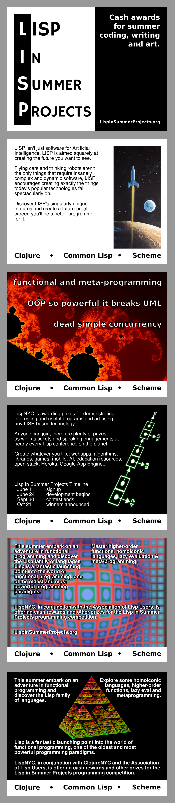

get-the-word-out
CONNECT WITH LISP IN SUMMER PROJECTS
SHARE ON
FLIER / HANDOUT
|
PRINTED MEDIA
We've created a variety of printable go-cards, or ask us and we'll send you some for distribution in your local area:
|  |
( sponsored by LispNYC , ClojureNYC the Association of Lisp Users and you )
, ClojureNYC the Association of Lisp Users and you )